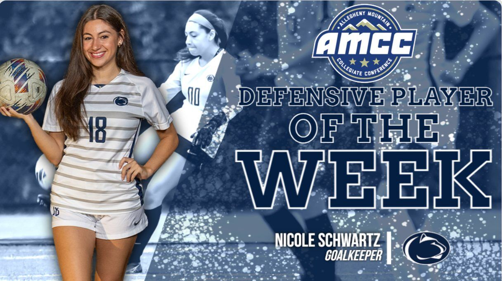
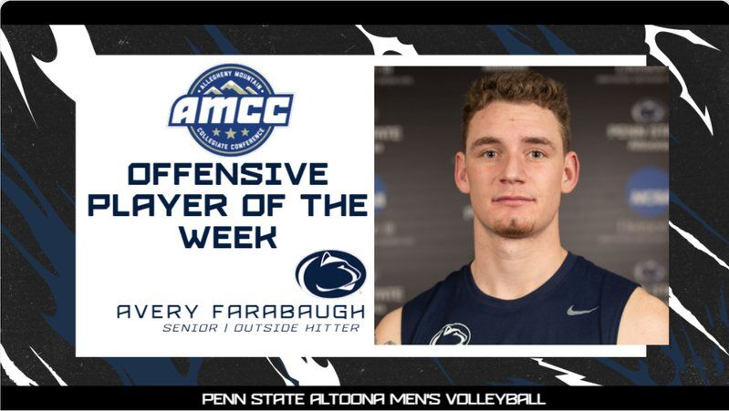
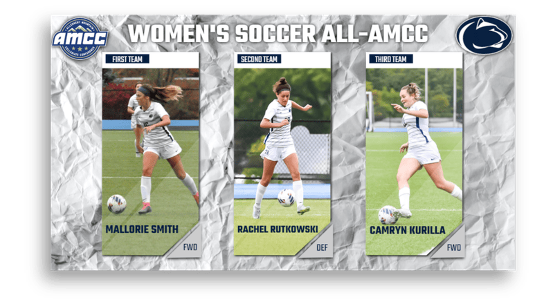

Reels
 Penn State Altoona26.4K views
Penn State Altoona26.4K viewsCreated fast, energetic digital coverage across four sports, turning live moments into photography, graphics and short-form video built to grow attention and strengthen the athletics community.



Penn State Altoona26.4K viewsPenn State Altoona18.8K viewsPenn State Altoona13.5K views